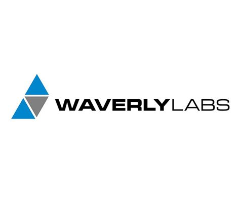

Veille Technologique
Gli auricolari di traduzione istantanea : verso la fine della barriera linguistica ?
Flash Actu — Agosto 2026
1. Traduttori simultanei : smartphone, auricolari e occhiali smart
Fonte : Zazoom.it | Data : 10 Agosto 2026
Nel 2026, i traduttori simultanei sono usciti dalle semplici applicazioni per integrarsi in dispositivi portatili di uso quotidiano. Gli auricolari traducono mentre parli, gli occhiali intelligenti mostrano la traduzione in tempo reale, e gli smartphone interpretano le chiamate telefoniche.
- La traduzione non richiede più di digitare o mostrare lo schermo : avviene in tempo reale.
- I dispositivi recenti integrano già funzionalità di traduzione vocale senza che l'utente lo sappia.
- L'articolo propone una selezione dei 7 migliori auricolari con traduzione simultanea per il 2026.
2. Tutti poliglotti ! È già possibile con l'IA e un paio di auricolari
Fonte : Ouest-France (Partir) | Data : Agosto 2026
La barriera linguistica non è più un ostacolo per i viaggiatori grazie all'associazione dell'IA e degli auricolari Bluetooth. Questa tecnologia trasforma auricolari ordinari in veri strumenti di interpretazione in tempo reale.
- Il microfono degli auricolari isola le voci e sopprime i rumori ambientali.
- L'IA trasforma le parole in testo, le traduce analizzando il contesto e il tono, poi genera un ritorno audio nell'orecchio dell'utente.
- La latenza è ora ridotta a 1 o 2 secondi (contro 5-10 in precedenza), rendendo le conversazioni più fluide e naturali.
- La traduzione è diventata "intelligente" : riproduce le emozioni e l'intonazione, con voci di sintesi realistiche.
3. Auricolari traduzione istantanea : il futuro della comunicazione senza frontiere
Fonte : Soundcore Blog | Data : 25 Maggio 2026
Gli auricolari traduzione istantanea trasformano radicalmente il modo in cui interagiamo con il mondo, sia per il lavoro, gli studi o i viaggi internazionali. Agiscono come interpreti personali nascosti nelle orecchie.
- Il funzionamento si basa su una sinergia tra hardware (microfoni ad alta fedeltà) e cloud (algoritmi IA potenti).
- La latenza è il nemico numero uno : un buon sistema deve offrire una risposta quasi immediata.
- I criteri di scelta includono : velocità di elaborazione, precisione semantica e capacità dei microfoni di isolare la voce nel rumore.
4. Top 5 BEST Translation Earbuds in 2026
Fonte : YouTube (Top 5 Picks Channel) | Data : 16 Agosto 2026
Questo video testa cinque degli auricolari a traduzione in tempo reale più interessanti del 2026, in situazioni reali : ristoranti, taxi, riunioni professionali e conversazioni multilingue.
- SonaBuds — Opzione economica
- soundcore AeroFit 2 AI Assistant — Buon rapporto qualità-prezzo
- soundcore Liberty 5 Pro Max — Performante
- Timekettle W4 — Molto performante
- Timekettle W4 Pro — Il migliore secondo il tester
Problematica
Gli auricolari di traduzione istantanea possono realmente sostituire l'apprendimento delle lingue e diventare uno strumento affidabile nella comunicazione mondiale ?
Questa domanda guida tutta la mia ricerca.
Come funziona ?
Il pipeline della traduzione istantanea
È un processo in 4 fasi chiave che deve essere quasi istantaneo :
- 1. Cattura e Riconoscimento (ASR) : Il microfono cattura la voce, l'IA la trasforma in testo (Speech-to-Text). I nuovi modelli gestiscono rumore e accenti.
- 2. Traduzione Neurale (NMT) : Il testo viene tradotto da un modello IA (come Gemini). È qui che il contesto e il gergo vengono analizzati per una traduzione fedele.
- 3. Sintesi Vocale (TTS) : Il testo tradotto viene trasformato in audio, imitando il tono e il ritmo della voce originale.
- 4. Infrastruttura : Tutto il calcolo viene eseguito sullo smartphone o nel cloud (per i modelli più potenti).
Sintesi personale dagli articoli di Soundcore, Ouest-France e Frandroid.
Gli Attori del Mercato (2026)

- Prodotto : Google Traduttore + Gemini
- Compatibile con tutti gli auricolari
- IA Gemini per il contesto
Apple
- Prodotto : AirPods + Apple Intelligence
- Elaborazione locale (riservatezza)
- Previsto fine 2025 con iOS 19

Timekettle
- Prodotto : W4 Pro, WT2 Edge
- Specialista della traduzione
- Classificato n°1 nel 2026

Waverly Labs
- Prodotto : Ambassador
- Alta gamma professionale
- Ideale per riunioni
soundcore
- Prodotto : AeroFit 2, Liberty 5
- Buon rapporto qualità-prezzo
- Assistente IA integrato
Fonti : Siti ufficiali, comparazioni web e video test 2026.
Vantaggi e Svantaggi
Vantaggi
- Rimuove la barriera linguistica immediata
- Accessibile a tutti (Google)
- Favorisce gli scambi professionali e personali
- Latenza ridotta a 1-2 secondi
- Traduzione contestuale ed emotiva
Svantaggi
- Dipendenza dalla connessione
- Non affidabile al 100% (umorismo, espressioni)
- Problema di riservatezza
- Possibile impoverimento culturale
- Latenza ancora percepibile
Impatto per le Organizzazioni
Aziende
- Riunioni internazionali più fluide
- Meno costi di interpreti
Sicurezza
- Rischio di fuga di dati via cloud
- Questioni RGPD
Turismo
- Accoglienza dei turisti facilitata
- Riduzione degli equivoci
Istruzione
- Strumento pedagogico
- Aiuto per studenti in difficoltà
Ispirato dall'analisi di Le Soir e dagli articoli di Zazoom / Ouest-France.
Metodologia di Veille
Strumenti utilizzati :
- Google News — alert "traduzione istantanea", "AI translation earbuds"
- Siti tech : Frandroid, Les Numériques, ZDNet, TechRadar, Soundcore Blog
- Siti generalisti : Ouest-France, Zazoom.it
- Video : YouTube (canali tech)
- Radio : Franceinfo
- Siti ufficiali : Google Blog, Apple Newsroom
Frequenza :
1 o 2 volte a settimana.
Conclusione
Gli auricolari di traduzione istantanea non sostituiranno l'apprendimento delle lingue. La lingua è cultura, emozione, umorismo... cose che un'IA non padroneggia ancora perfettamente.
Nel 2026, i traduttori simultanei sono usciti dalle applicazioni per integrarsi in oggetti quotidiani (auricolari, occhiali, smartphone), rendendo la barriera linguistica sempre meno invalicabile. Il futuro sarà probabilmente una sinergia tra l'IA per la comprensione immediata e l'apprendimento umano per la ricchezza degli scambi.
Fonti : Zazoom (10/08/2026), Ouest-France (08/2026), Soundcore (25/05/2026), YouTube (16/08/2026).